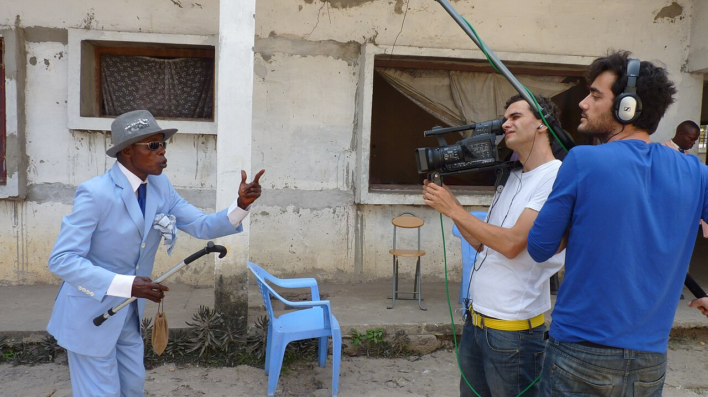

CityLoop Quest Dubrovnik


La vieille ville concentre les images les plus célèbres, mais elle ne représente qu’une petite partie du Dubrovnik contemporain. À l’intérieur des remparts, la vie suit une verticale exigeante : Stradun est presque plat, puis les ruelles deviennent escaliers vers les quartiers de Peline ou de Sainte-Marie. Les livraisons matinales, les poulies et les chariots révèlent l’effort nécessaire pour habiter un monument visité chaque jour par des milliers de personnes.
Pile, à l’ouest, fonctionne comme un seuil. Les autobus, taxis et groupes s’y arrêtent avant le pont. Derrière l’agitation se cachent Kolorina, la petite baie sous Lovrijenac, et Danče, lieu de baignade ancien lié au couvent. Ploče, à l’est, offre des vues ouvertes sur les remparts, Lokrum et Banje ; ses hôtels et villas racontent le développement touristique des XIXe et XXe siècles.
Gruž constitue le grand port moderne. Marché, gare routière, ferries et paquebots y créent un paysage de départs. Les anciens entrepôts et l’usine TUP rappellent que le quartier fut aussi industriel. Le matin, les étals de poissons et légumes attirent une clientèle locale moins pressée que les passagers qui traversent le quai avec leurs valises.

Lapad occupe une péninsule de baies, d’hôtels, de plages et de promenades. Uvala Lapad est familiale et animée, tandis que Babin Kuk rassemble grands complexes hôteliers et sentiers côtiers. Les immeubles du XXe siècle, parfois ignorés par les guides, montrent comment la ville s’est adaptée à la croissance démographique et au tourisme de masse.

Plus au nord, Mokošica s’étend le long de Rijeka Dubrovačka. Ses ensembles résidentiels répondent au manque d’espace près du centre. Les villages de Rožat, Komolac et Sustjepan conservent des villas d’été, des jardins et une relation étroite avec l’Ombla. Le grand pont Franjo-Tuđman, ouvert en 2002, marque l’entrée de cette baie profonde.
Chaque quartier possède donc sa propre horloge. La vieille ville vit au rythme des visites et des cloches ; Gruž suit les ferries ; Lapad s’anime en fin d’après-midi ; Mokošica accompagne les déplacements quotidiens des habitants. Traverser ces ambiances permet de sortir d’une vision figée et de rencontrer une ville portuaire actuelle, avec ses écoles, ses embouteillages, ses marchés et ses lieux de baignade.